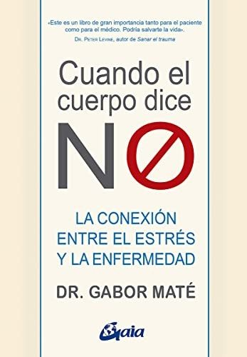
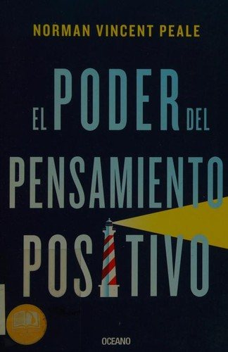
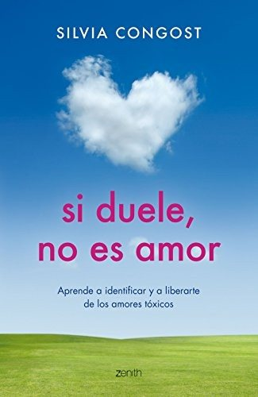
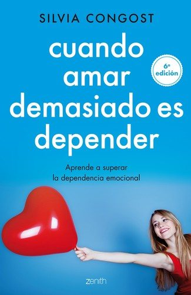
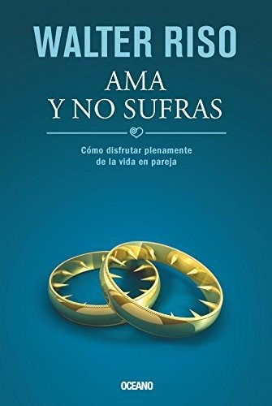
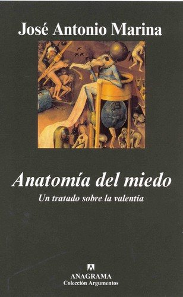
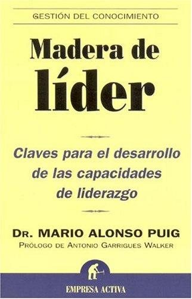
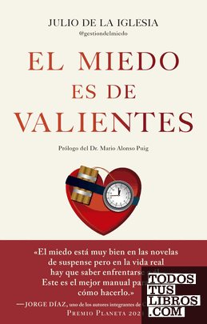

Libros de autoestima, autocuidado y superación personal
Libros de autoestima, autocuidado y superación personal en español: 10 libros completos para leer gratis aquí mismo y 53 fichas de títulos actuales.
Autocuidado psicológicoSuperación personalComparación socialAutosabotajeAutoestimaRelaciones tóxicasConfianza en uno mismoDiálogo internoDejar de buscar aprobaciónAmor propioSoledadAutocompasiónValentíaCrecimiento personalPoner límitesAutoexigenciaVolver a empezarPerfeccionismoNegarse sin culpaDependencia emocional
Hablemos de Autocuidado DigitalFundación Antropomorfa
Hablemos de Autocuidado DigitalFundación AntropomorfaCómo ser resiliente ante la adversidad. Cuaderno de trabajo para el usuarioSerrano-Zárate, Berenice; De la Rosa Gómez, Anabel
Cómo ser resiliente ante la adversidad. Cuaderno de trabajo para el usuarioSerrano-Zárate, Berenice; De la Rosa Gómez, AnabelManual cuidado y autocuidadoCinep/PPP
Manual cuidado y autocuidadoCinep/PPPLa de BringasBenito Pérez Galdós
La de BringasBenito Pérez GaldósLa desheredadaBenito Pérez Galdós
La desheredadaBenito Pérez GaldósMarianelaBenito Pérez Galdós
MarianelaBenito Pérez GaldósTristanaBenito Pérez Galdós
TristanaBenito Pérez GaldósAyúdate!: (self-help) con ejemplos sobre el caracter, la conducta y la ...Samuel Smiles , Emilio Augusto Soulère
Ayúdate!: (self-help) con ejemplos sobre el caracter, la conducta y la ...Samuel Smiles , Emilio Augusto SoulèreLos pazos de UlloaEmilia Pardo Bazán
Los pazos de UlloaEmilia Pardo BazánNovelas ejemplares y amorosasMaría de Zayas y Sotomayor
Novelas ejemplares y amorosasMaría de Zayas y SotomayorAutoestima automáticaSilvia Congost
Autoestima automáticaSilvia CongostMe quiero, te quieroMaría Esclapez
Me quiero, te quieroMaría EsclapezUn hombre llamado OveFredrik Backman
Un hombre llamado OveFredrik BackmanEl niño, el topo, el zorro y el caballoCharlie Mackesy
El niño, el topo, el zorro y el caballoCharlie MackesyEncuentra tu persona vitaminaMarian Rojas Estapé
Encuentra tu persona vitaminaMarian Rojas EstapéLa montaña eres túBrianna Wiest
La montaña eres túBrianna WiestCuando el cuerpo dice noGabor Maté
Cuando el cuerpo dice noGabor Maté
El poder de los introvertidosSusan Cain
El poder de los introvertidosSusan CainEn Auschwitz no había ProzacEdith Eger
En Auschwitz no había ProzacEdith EgerGente normalSally Rooney
Gente normalSally RooneyInquebrantablesDaniel Habif
InquebrantablesDaniel HabifEl arte de no amargarse la vidaRafael Santandreu
El arte de no amargarse la vidaRafael SantandreuEleanor Oliphant está perfectamenteGail Honeyman
Eleanor Oliphant está perfectamenteGail HoneymanEnamórate de tiWalter Riso
Enamórate de tiWalter RisoLos límites del amorWalter Riso
Los límites del amorWalter RisoEl poder del pensamiento positivoNorman Vincent Peale
El poder del pensamiento positivoNorman Vincent Peale
Otras maneras de usar la bocaRupi Kaur
Otras maneras de usar la bocaRupi KaurSi duele, no es amorSilvia Congost
Si duele, no es amorSilvia Congost
Sé amable contigo mismoKristin Neff
Sé amable contigo mismoKristin NeffCuando amar demasiado es dependerSilvia Congost
Cuando amar demasiado es dependerSilvia Congost
Gente tóxicaBernardo Stamateas
Gente tóxicaBernardo StamateasLas gafas de la felicidadRafael Santandreu
Las gafas de la felicidadRafael SantandreuEmociones tóxicasBernardo Stamateas
Emociones tóxicasBernardo StamateasReinventarse. Tu segunda oportunidadMario Alonso Puig
Reinventarse. Tu segunda oportunidadMario Alonso PuigAma y no sufrasWalter Riso
Ama y no sufrasWalter Riso
Heridas emocionalesBernardo Stamateas
Heridas emocionalesBernardo StamateasLos dones de la imperfecciónBrené Brown
Los dones de la imperfecciónBrené BrownSuperar la adversidad. El poder de la resilienciaLuis Rojas Marcos
Superar la adversidad. El poder de la resilienciaLuis Rojas MarcosEl derecho a decir noWalter Riso
El derecho a decir noWalter RisoJuan Salvador GaviotaRichard Bach
Juan Salvador GaviotaRichard BachLa treguaMario Benedetti
La treguaMario BenedettiLa culpa es de la vacaJaime Lopera y Marta Inés Bernal
La culpa es de la vacaJaime Lopera y Marta Inés Bernal¿Amar o depender?Walter Riso
¿Amar o depender?Walter RisoAnatomía del miedoJosé Antonio Marina
Anatomía del miedoJosé Antonio Marina
La autoestimaLuis Rojas Marcos
La autoestimaLuis Rojas MarcosCuentos para pensarJorge Bucay
Cuentos para pensarJorge BucayEl camino de las lágrimasJorge Bucay
El camino de las lágrimasJorge BucayCartas para ClaudiaJorge Bucay
Cartas para ClaudiaJorge BucayEl caballero de la armadura oxidadaRobert Fisher
El caballero de la armadura oxidadaRobert FisherMadera de líderMario Alonso Puig
Madera de líderMario Alonso Puig
Pensar bien, sentirse bienWalter Riso
Pensar bien, sentirse bienWalter RisoDéjame que te cuenteJorge Bucay
Déjame que te cuenteJorge BucayEl proceso de convertirse en personaCarl R. Rogers
El proceso de convertirse en personaCarl R. RogersLas mujeres que aman demasiadoRobin Norwood
Las mujeres que aman demasiadoRobin NorwoodLos cuatro acuerdosMiguel Ruiz
Los cuatro acuerdosMiguel RuizVolar sobre el pantanoCarlos Cuauhtémoc Sánchez
Volar sobre el pantanoCarlos Cuauhtémoc SánchezRebecaDaphne du Maurier
RebecaDaphne du MaurierTus zonas erróneasWayne W. Dyer
Tus zonas erróneasWayne W. DyerEl miedo es de valientesJulio de la Iglesia
El miedo es de valientesJulio de la Iglesia
El sutil arte de que (casi todo) te importe una mierdaMark Manson
El sutil arte de que (casi todo) te importe una mierdaMark MansonEl poder de ser vulnerableBrené Brown
El poder de ser vulnerableBrené BrownLas cinco heridas que impiden ser uno mismoLise Bourbeau
Las cinco heridas que impiden ser uno mismoLise BourbeauVivir sin miedosSergio Fernández
Vivir sin miedosSergio FernándezTemas relacionados
¿Estás eligiendo carrera?
Haz gratis el test de orientación vocacional de AURZANE: intereses, aptitudes, autoconcepto y hábitos de estudio, con informe completo.